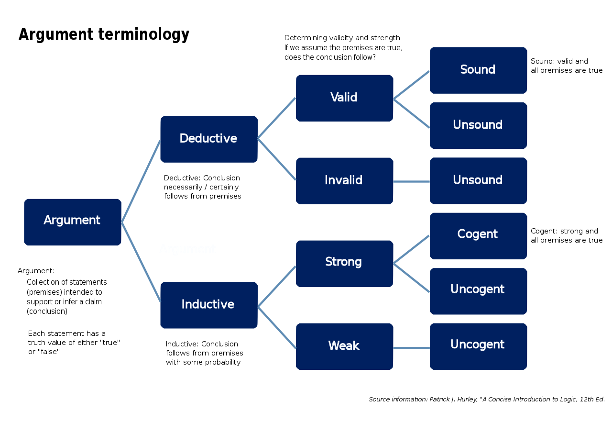

The Reasoning Process And Scientific Method
Table of Contents
1. Definitions
- Scientific Method
- i
- Reasoning Process
- i
- Science
- i
- Religion
- i
- Inductive Reasoning
- i
- Deductive Reasoning
- i
- Inductive Logic
- The same thing as Inductive Reasoning, but with better wording in my opinion.
- Deductive Logic
- The same thing as Deductive Reasoning, but with better wording in my opinion.
- Necessary Condition
- i
- Sufficient Condition
- i
- Argument
- A list of premises followed by a conclusion.
- Note: Statements are either true or false, and arguments are either valid or invalid. Arguments cannot be true or false.
- Deductive Argument
- An argument that guarantees its conclusions based on its premises.
- Valid Argument
- An argument such that any substitution of values for variables in it which makes the premises true also makes the conclusion true.
- In other words, for a valid argument, it is impossible for the premises to be true while the conclusion is false.
- Validity is the relationship between the premises and the conclusion.
- Sound Argument
- A valid argument with true premises.
- It is possible for arguments to be valid, and have false premises.
- In order to determine if an argument’s premises are true, you have to do some research.
- If any assignments of values to variables appearing in the argument makes all the premises true, then it also makes the conclusion true.
- Ampliative Argument
- An argument that makes its conclusions probable, but not certain based on their premises. Arguably, every ampliative argument has to use at least some degree of faith.
- Strong Argument
- i
- Weak Argument
- i
- Cogent Argument
- A type of Strong Argument where I.
- Uncogent Argument
- I. Uncogent Arguments can be either Strong Arguments or Weak Arguments.
- Faith
- i
- (Blind) Faith
- High confidence in a belief, based on a perceived degree of warrant without using reason; the suspension of skepticism without using reason.
- Rationalized
- Attempting to make something seem reasonable, even if actually isn’t. This term can be applied to both metaphysics/epistemology or ethical / political philosophy, and while it can always describe someone’s attitude or actions towards facts about the former, it seems less applicable to apply it to people’s ethical or political opinions since morality is subjective, and most of the time when people do rationalize their ethical or political opinions, it is typically done in an attempt to justify oneself according to the Law of Egoism, in which case self-justification or self-rationalization may be better terms.
- Self-Justification / Self-Rationalization
- The psychological tendency for life to justify its own existence, beliefs, and actions for the sake of its own continued existence, even if their beliefs are wrong, their existence doesn’t accomplish anything meaningful according to rational beings, and their actions work against post-moral cooperation ethics.
- Qualitative Reasoning
- i
- Quantitative Reasoning
- i
- Bayes Theorem
- i
- Correlation
- i
- Causation
- i
- Type I Error
- i
- Type II Error
- i
2. Introduction To The Reasoning Process
Most people tend to be more familiar with the Scientific Method than the Reasoning Process since the former is taught in public schools whereas the latter is generally not. That being said, the Scientific Method isn’t too different from the Reasoning Process since it’s really just the Reasoning Process, but broken up into more steps and geared towards writing scientific research papers. I will state the Scientific Method process here for reference, and then I will explain each of the steps of the Reasoning Process from an epistemological point of view and show how it’s a more general process of thinking. The Reasoning Process is the only valid source of Sensory Knowledge, knowledge of reality.
3. The Scientific Method
- Define a question
- Gather information and resources (observe)
- Form an explanatory hypothesis
- Test the hypothesis by performing an experiment and collecting data in a reproducible manner
- Analyze the data
- Interpret the data and draw conclusions that serve as a starting point for a new hypothesis
- Publish results
- Retest (frequently done by other scientists)
The last step of the Scientific Method is to repeat the steps, because a proper Theory of Knowledge must be inductive, not deductive. Although forms of deductive reasoning exist, people are always bound to make mistakes. Making mistakes and understanding how they were made is part of learning, which is why the steps of both the Scientific Method and Reasoning Process are done recursively in a repetitive cycle.
Wikipedia: The Scientific Method.
At some point, all the Laws of Nature were originally deemed hypotheses. Until that point, people continue building confidence in them, or they lose confidence in it until they reject it.
In every field, one learns the basics, and if they go further then they can start to do research in that field. But there are some fields where doing the basics is truly much different than what an expert would be expected to do:
- In mathematics, one first learns how to do math, then they move on to proving theorems and the like.
- In computer science, one first learns how to program, then they move on to learning what computers are doing and how they work.
- In linguistics, one first learns languages and the basics, then they start doing research and maybe they might even document languages.
3.1. Differential Versus Correlational Hypotheses
4. The Reasoning Process
4.1. Step #1: Sense Perception
- Sense perception is the input data to the reasoning process. Without sense perception, it would be impossible to use reason because there would be no data to reason about.
- Since reason can never be separated from sense perception, then there is no meaningful such thing as “pure reason”.
- Although the senses can be invalid, this is not a problem as long as the mind can use reason to correct the sense-perception errors.
- Fallibilism: the principle that propositions concerning empirical knowledge can be accepted even though they cannot be proved with certainty.
- Is Fallibilism a valid concept?
Note: We have to establish reasoning first before we can later proclaim that the senses are the input for the reasoning process.1
4.2. Step #2: Concept Formation
When false concepts are formed, this typically occurs when sensory knowledge is gained through invalid means like emotion or faith, through intellectual dishonesty (rationalizing instead of reasoning), or due to the nature of being a subject with limited knowledge and sensory experience of reality. When the latter happens, the resulting reasoning, ideas, actions can be considered rational since they follow the reasoning process, even if the results are contrary to reality, since reason has the potential to be wrong.
4.3. Step #3: Assertion Of Premises
A rational mind doesn’t merely recognize facts, it knows which facts are relevant.
- The assertion of premises in an argument is the assertion of propositions that the arguer believes to be true, according to their model of experience.
- Although emotions and instincts can also count as knowledge in their appropriate contexts, they can only establish true propositions.
- Reason is different from emotions and instincts because reason also includes the logic step, which is when logical operations are performed to connect propositions together and form new propositions (conclusions) that are true if all the premises are true.
- That being said, any propositions generated by emotions and instincts would be included in Step #3 of the reasoning process, following Step #2 concept formation and before Step #4 logic.
See: Properties of Premises for more details on premises.
The reason why assertion of premises is a separate step from concept formation are that:
- Premises can be real or hypothetical,
- Stating premises should be the first step of making an argument,
- Implicit premises should be stated explicitly,
- Not all the concepts that one knows will be used in an argument, so stating the concepts that are relevant to an argument as premises helps other people understand arguments more clearly.
4.4. Step #4: The Logic Sub-Process
Since premises and logic can both be used to make conclusions, those conclusions are frequently used as premises for other later arguments. So although the Logic step of the Reasoning Process is being listed here as following the Assertion of Premises step, there is often the case that there is a lot of back and forth between these two steps, but it’s typically done subconsciously.
Rationality is more than just the absence of contradiction. It is conformance to norms of judgment/decision-making.
See: Wikipedia: Logical Reasoning Methods And Argumentation.
See: Wikipedia: Inductive vs Deductive Reasoning.

Figure 1: Argument Terminology Used In Logic (en), CC BY-SA 4.0, by Nyq.
.svg){kind=link}
4.4.1. Deductive Logic
The more common term is “Deductive Reasoning”, but I prefer to say “Deductive Logic” instead because Induction and Deduction both occur within the Logic sub-process of the Reasoning Process.
It’s possible to make mistakes when doing deductive logic. You might have to try several attempts before you finally prove what you’re trying to prove, the process for proving things is inductive.
- Syllogisms
Syllogisms are a form of deductive logic where ….
An example of a syllogism is:
All men are mortal.
Socrates is a man.
Therefore Socrates is mortal.
- Sound and Unsound Arguments
- Valid Argument
- An argument such that any substitution of values for variables in it which makes the premises true also makes the conclusion true.
- In other words, for a valid argument, it is impossible for the premises to be true while the conclusion is false.
- Validity is the relationship between the premises and the conclusion.
- Sound Argument
- A valid argument with true premises.
- It is possible for arguments to be valid, and have false premises.
- In order to determine if an argument’s premises are true, you have to do some research.
- If any assignments of values to variables appearing in the argument makes all the premises true, then it also makes the conclusion true.
i
4.4.2. Inductive Logic
The more common term is “Inductive Reasoning”, but I prefer to say “Inductive Logic” instead for the same reason why I prefer “Deductive Logic” over “Deductive Reasoning”.
See: Philosophical Razors for more details on the Philosophical Razors.
See: Heuristics for Problem-Solving for more details on heuristics oriented towards problem solving.
- Cogent and Uncogent Arguments
i
Examples of Ampliative Arguments:
- Although we know that it took evolution X billion years to go from eukaryotic life and multi-cellular life, and we also know that it only took X hundred million years after the Earth and the solar system formed for life to appear on Earth, this is technically only an ampliative argument that the first life on a celestial body is probably easier to form than multi-cellular life.
- The reason why is this argument is not a deductive one is because it doesn’t account for the possibility that this timeline actually could have been an extremely unlikely event that just happened instead of one of the more likely events.
- If we wanted to know the truth regarding which event truly takes less time to occur than the other, we would need more data points.
- But for now, our knowledge of life on Earth as the only known, proven life to exist in the universe is the only data point in our dataset.
- That said, and based on our current evidence (everything that we currently know about the universe), the most reasonable and most statistically likely proposition to conclude until we have more data is that it takes significantly longer for unicellular life to become multi-cellular life, than it does for single-celled life to ever appear in the first place.
5. The Importance Of Explanatory And Predictive Power
The Science of Thinking - Veritasium: Veritasium explains why how our brains automate much of thinking by using heuristics and long-term memory, and the key to getting smarter is to force ourselves to think through things methodically step-by-step.
The Four Things it Takes to be an Expert: Veritasium explains how repeated attempts, a valid consistent environment, timely feedback, and pushing the boundaries of our skills are the four steps to becoming an expert at anything.
6. List Of Reasoning Skills
- Habitually Doing Research Before Attempting A Task.
- Understanding That All Knowledge Is Ultimately Based On A Model Of Experience And The Limits Of Knowledge.
- Questioning Everything, Including The Foundation And Underlying Assumptions Of One’s Own Knowledge.
- Being Able To Detect And Identify Bias, Acknowledge Multiple Perspectives, And Think Without Biases.
- Recognizing Unstated Assumptions And Values.
- Understanding The Importance Of Evidence And The Levels Of Certainty/Skepticism.
- Updating One’s Belief System On The Basis Of Wider Experience.
6.1. Reasoning Process
- Gathering and connecting pertinent (relevant) information.
- Recognizing problems, and finding workable means for solving those problems.
- Habitually figuring out the best way to do/learn/use something before doing that action.
- Habitually starting with the basics and definitions before moving forward on a topic.
- This is especially important because if the knowledge is wrong, then so is everything based upon it.
- Understanding the relevant methods, techniques, and criteria for making judgments.
- Understanding the reasoning process, its limits, and how it can be wrong.
- Understanding formal logic and inference rules.
- Understanding fallacies and how to avoid making them.
- Being able to transfer intuition (subconscious reasoning) into conscious thinking.
- Knowing how to form warranted conclusions, valid arguments, and sound arguments.
- Testing the conclusions and generalizations at which one arrives.
- Distinguishing between ’rational’ and ’rationalized’, AKA the “reason” versus “justification” dichotomy.
- Using and comprehending language with accuracy, clarity, and discernment.
In sum, Critical Thinking is “a persistent effort to examine any belief or supposed form of knowledge in the light of the evidence that supports or refutes it and the further conclusions to which it tends.” -Edward Glaser (1941)
7. Transferring Thoughts From The Subconsciousness Into The Consciousness
i
People would ask questions so much more often if they knew and mastered the reasoning skill for accessing the thoughts formed by one’s own intuition.
7.1. Mantras To Say To Invoke Using Reasoning Skills In Appropriate Situations
Note: These are situations where not saying the mantras would cause the person thinking/saying the mantras to be less likely to use the reasoning skill associated with that mantra.
- Use reason.
- Why am I feeling this way?
- What is causing me to feel this way?
- What am I subconsciously noticing?
- What is leading me to speculate this?
The phrase “Use reason” for invoking the inclination to use reason to solve a problem might be considered a case where the habitual use of a mantra improves the brain’s intelligence by elevating its ability to solve problems (in this case by habitually reminding it to do something that it otherwise wouldn’t do)
Other similar cases that might not exactly count as mantras since their wordings can vary might be: “Why am I thinking this?” or “Why is mind noticing this conspicuous instance X?”
8. What It Means To Be Rational
A lot of people will say that they are rational, but they actually don’t know what it really means to be rational. If they don’t have a very good theory of epistemology, they might think that being rational only means not making contradictions when the beliefs are presented as propositional logic, but rationality is far more than this.
True rationality also means understanding that knowledge is formed according to belief networks in coherentism, that all knowledge is constrained by our sense perception, that beliefs do not magically come out reason, the values of subjective and therefore there is no reason to do it or not do anything.
Even for the theorems that can be proven by performative contradictions, the brain technically doesn’t have to except the premises that lead to the contradictions, just as subjects don’t have to exist that their objective purpose is to survive, reproduce, and have children.
Footnotes:
Another advantage to establishing the validity of the senses and empiricism later on is that it makes this philosophy more general. Futuristic robots that use physics to create consciousnesses of their own would very conceivably have different senses than humans do, as would the hypothetical non-human life that exists on other planets do.